정답
정답
정답
부분점수
| 점수 | 세부기준 |
|---|---|
| 4점 | (1), (2)번이 모두 맞는 경우 4점 획득 |
| 2점 | (1), (2)번 중 하나만 정답인 경우 2점 획득 |
해설
[리클로저]
[선로 개폐기]
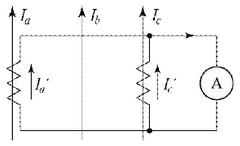
[계산과정]
변류기의 변류비는 1차 전류와 2차 전류의 비율을 나타냅니다. 문제에서 변류비는 100/5이므로, 1차 전류를 \(I_1\), 2차 전류를 \(I_2\)라고 하면 다음과 같은 관계가 성립합니다.
\[ \frac{I_1}{I_2} = \frac{100}{5} = 20 \]
전류계에 측정된 전류는 2차 전류 \(I_2\)이므로, $I_2 $= 4[A]입니다. 따라서 1차 전류 \(I_1\)는 다음과 같이 계산할 수 있습니다.
\[ I_1 = 20 \times I_2 = 20 \times 4[A] = 80[A] \]
따라서 1차 전류의 크기는 80[A]입니다.
정답 80[A]
해설) 단순 계산형 / 난이도 下
정답
[계산과정] \[ I_a' = I_c' = I = 4 [A] \] \[ I_a = aI_a' = \frac{100}{5} \times 4 = 80 [A] \]
정답 80 [A]
부분점수
| 점수 | 세부기준 |
|---|---|
| 5점 | 계산과정과 정답에 오류가 없는 경우 5점 획득 |
| 0점 | 계산과정이나 정답에 오류가 있는 경우 0점 |
해설
\[ 가동결선이므로 I_a' = I_c' = I = 4 [A] 이다. \]
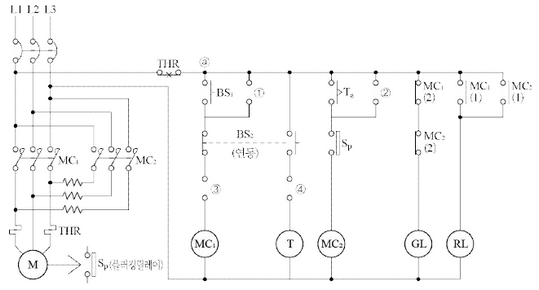
정답
①
②
③
④
위의 회로에 있는 \(MC_1, MC_2\)의 동작과정을 설명하시오. 정답
보조 릴레이 T와 저항 r에 대하여 그 용도 및 역할을 설명하시오. 정답
해설) 도면완성+시퀀스 동작설명 / 난이도 上
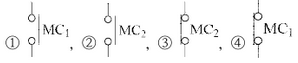
① BS₁으로 MC₁을 여자시켜 전동기를 직입 기동한다. (자기 유지) ② BS₂을 눌러 MC₁이 소자되면 전동기는 전원에서 분리되나 회전자 관성모멘트로 인하여 회전은 계속한다. ③ 이때 BS₂의 연동접점으로 T가 MC₁소자 즉시 여자되며, BS₂를 누르고 있는 상태에서 설정 시간 후 MC₂가 여자되어 전동기는 역회전하려고 한다. (자기 유지) ④ 전동기의 속도가 급격히 감소하여 0에 가까워지면 플러깅 릴레이에 의하여 전동기는 전원에서 완전히 분리되어 급정지한다. (플러깅 제동)
| 점수 | 세부기준 |
|---|---|
| 7점 | (1), (2), (3)번이 모두 정답인 경우 |
| 2~0점 | 문항 (1)의 소문항 2개당 1점씩 획득 (0~1개 0점, 2~3개 1점, 4개 2점) |
| 3점 | 문항 (2)번이 정답인 경우 |
| 2점 | 문항 (3)번이 정답인 경우 |
정답
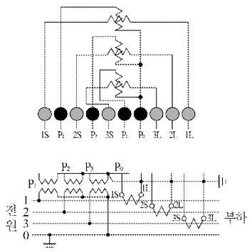
정답
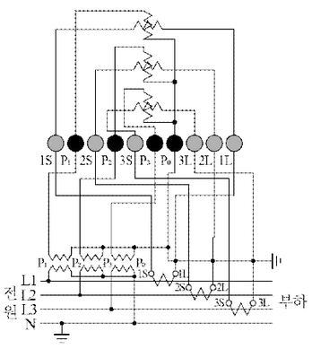
부분점수
| 점수 | 세부기준 |
|---|---|
| 4점 | 결선도를 정확하게 작성한 경우 4점 획득 |
| 0점 | 결선도에 오류가 있는 경우 0점 |
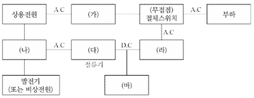
정답
| (가) | (나) | (다) | (라) | (마) |
|---|---|---|---|---|
| 상용전원 | UPS(무정전 전원 공급 장치) | 정류기 | 배터리 | 발전기(또는 비상 전원) |
(가) 자동전압조정기(AVR) (나) 절체용 개폐기 (다) 정류기(컨버터) (라) 인버터 (마) 축전지
| 점수 | 세부기준 |
|---|---|
| 4점 | 5개가 모두 정답인 경우 4점 획득 |
| 3점 | 4개가 정답인 경우 3점 획득 |
| 2점 | 2~3개가 정답인 경우 2점 획득 |
| 1점 | 1개가 정답인 경우 1점 획득 |
[계산과정]
정답
[계산과정]
정답
[계산과정]
정답
\[ [계산과정] e = \frac{1,000 \times 10^3}{6,000} \times (0.3 \times 2 + 0.4 \times 2 \times \frac{0.6}{0.8}) = 200 [V] \]
정답 200 [V]
\[ [계산과정] e = \frac{200}{6,000} \times 100 [%] = 3.333... \cong 3.33 [%] \]
정답 3.33 [%]
\[ [계산과정] P_l = \frac{(1,000 \times 10^3)^2 \times (0.3 \times 2)}{6,000^2 \times 0.8^2} \times 10^{-3} = 26.041... \cong 26.04 [kW] \]
정답 26.04 [kW]
| 점수 | 세부기준 |
|---|---|
| 6~0점 | 소문항 (1), (2), (3)의 계산과정과 정답이 모두 맞은 경우 1개당 2점씩 획득 |
송전선로 설계시 3상3선식 선로의 전압강하, 전압강하율, 전력손실을 계산하는 문제로, 각각의 수식을 암기하고 주어진 조건을 적용하여 산정할 수 있는 능력이 있는지 묻는 문제이다. 공식 암기만이 아니라 기본 수식에서 변형되는 과정도 한번 정리해 둔다면 수식이 기억나지 않을 때 찾아서 사용할 수 있다.
3상3선식 선로의 전압강하, 전압강하율, 전력손실을 구하는 수식과 변형과정은 다음과 같다.
전압강하
\[ e = \sqrt{3} I (R \cos \theta + X \sin \theta) = \sqrt{3} \frac{P}{\sqrt{3} V_r \cos \theta} (R \cos \theta + X \sin \theta) = \frac{P}{V_r} (R + X \tan \theta) [V] \]
전압강하율
\[ e = \frac{e}{V_r} \times 100 [%] \]
전력손실
\[ P_l = 3I^2 R = 3 \times \left( \frac{P}{\sqrt{3} V_r \cos \theta} \right)^2 R = \frac{P^2}{V_r^2 \cos^2 \theta} R [W] \]
여기서, 3상 유효전력과 전류는 다음과 같다.
\[ P = \sqrt{3} V_l I \cos \theta [W], I = \frac{P}{\sqrt{3} V \cos \theta} [A] \]
\[ e = \frac{P}{V_r} (R + X \tan \theta) = \frac{P}{V_r} (R + X \frac{\sin \theta}{\cos \theta}) = \frac{1,000 \times 10^3}{6,000} \times [(0.3 \times 2) + (0.4 \times 2) \times \frac{0.6}{0.8}] = 200 [V] \]
\[ e = \frac{e}{V_r} \times 100 = \frac{200}{6,000} \times 100 = 3.333... \cong 3.33 [%] \]
\[ P_l = \frac{P^2}{V_r^2 \cos^2 \theta} R = \frac{(1,000 \times 10^3)^2}{6,000^2 \times 0.8^2} \times (0.3 \times 2) \times 10^{-3} = 26.041... \cong 26.04 [kW] \]
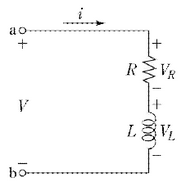
[계산과정]
총 임피던스 Z는 다음과 같이 표현할 수 있습니다.
\[ Z = R + jX_L - jX_C \]
여기서, R은 저항, \(X_L\)은 유도 리액턴스, \(X_C\)는 용량성 리액턴스입니다.
종합역률이 1이므로, 허수부가 0이어야 합니다. 따라서,
\[ X_L - X_C = 0 \]
\[ X_C = X_L = 3[\Omega] \]
따라서 병렬연결하는 용량성 리액턴스는 3[Ω]입니다.
정답 3[Ω]
해설) 단순 계산형 / 난이도 下
정답 [계산과정] \[ X_c = \frac{1}{\omega C} = \frac{R^2 + (\omega L)^2}{\omega L} = \frac{4^2 + 3^2}{3} = 8.33 [\Omega] \]
정답 8.33 [Ω]
부분점수
| 점수 | 세부기준 |
|---|---|
| 5점 | 계산과정과 정답이 모두 맞은 경우 5점 획득 |
| 0점 | 계산과정과 정답에 오류가 있는 경우 0점 |
해설 병렬공진 조건에서 합성 어드미턴스는 다음 식으로 구할 수 있다.
\[ Y = Y_1 + Y_2 = \frac{1}{R + j\omega L} + j\omega C = \frac{R}{R^2 + (\omega L)^2} + j(\omega C - \frac{\omega L}{R^2 + (\omega L)^2}) \]
이때 종합역률이 1이 되려면 저항만의 회로(공진회로)가 되어야 하므로, 합성 어드미턴스의 허수부는 0이 된다.
\[ \omega C - \frac{\omega L}{R^2 + (\omega L)^2} = 0 \to \omega C = \frac{\omega L}{R^2 + (\omega L)^2} \]
\[ X_c = \frac{1}{\omega C} = \frac{R^2 + (\omega L)^2}{\omega L} \]
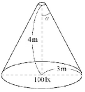
계산과정
원뿔의 밑면 면적 A는 다음과 같다.
\[ A = \pi r^2 = \pi (3m)^2 = 9\pi [m^2] \]
점광원의 평균광도 I는 다음과 같이 계산할 수 있다.
\[ E = \frac{I}{r^2} \cos\theta \]
여기서 E는 조도, r은 광원으로부터 면까지의 거리, \(\theta\)는 광원과 면 사이의 각도이다. 문제에서 주어진 조도는 평균조도이므로, 평균조도 공식을 사용한다. 원형 면에 수직으로 빛이 입사하는 경우를 가정하면 \(\cos\theta = 1\) 이다. 따라서 평균조도 E는 다음과 같다.
\[ E = \frac{I}{r^2} \]
주어진 값을 대입하면,
\[ 100[lx] = \frac{I}{(4m)^2} \]
\[ I = 100[lx] \times (4m)^2 = 1600[cd] \]
따라서 점광원의 평균광도는 1600[cd]이다.
정답: 1600 cd
해설) 단순 계산형 / 난이도 중
정답
[계산과정]
\[ \cos \alpha = \frac{4}{\sqrt{4^2 + 3^2}} = 0.8 \]
\[ I = \frac{100 \times 3^2}{2 \times (1 - 0.8)} = 2250 \text{ [cd]} \]
정답 2250 [cd]
부분점수
| 점수 | 세부기준 |
|---|---|
| 5점 | 계산과정과 정답에 오류가 없는 경우 5점 획득 |
| 0점 | 계산과정과 정답에 오류가 있는 경우 0점 |
해설
조도를 구하는 식은 다음과 같다.
\[ E = \frac{I}{r^2} \frac{2(1 - \cos \alpha)}{} \]
이 식을 이용하여 평균광도를 계산한다.
\[ I = \frac{E \times r^2}{2(1 - \cos \alpha)} = \frac{100 \times 3^2}{2 \times (1 - 0.8)} = 2250 \text{ [cd]} \]
| 구분 | 종류(최대사용전압을 기준으로) | 시험 전압 | |
|---|---|---|---|
| ① | 최대사용전압 7[kV] 이하인 권선 (단, 시험 전압이 500[V] 미만으로 되는 경우에는 500[V]) | 최대사용전압 × ( 1 ) 배 | |
| ② | 7[kV]를 넘고 25[kV] 이하의 권선으로서 중성선 다중 접지식에 접속되는 것 | 최대사용전압 × ( 1 ) 배 | $$ |
| ③ | 7[kV]를 넘고 60[kV] 이하의 권선(중성선 다중 접지 제외) (단, 시험 전압이 10,500[V] 미만으로 되는 경우에는 10,500[V]) | 최대사용전압 × ( 1 ) 배 | |
| ④ | 60[kV]를 넘는 권선으로서 중성점 비접지식 전로에 접속되는 것 | 최대사용전압 × ( 1.1 ) 배 | |
| ⑤ | 60[kV]를 넘는 권선으로서 중성점 접지식 전로에 접속하고 또한 성형 결선의 권선의 경우에는 그 중성점에 T좌 권선과 주좌 권선의 접속점에 피뢰기를 시설하는 것 (단, 시험 전압이 75[kV] 미만으로 되는 경우에는 75[kV]) | 최대사용전압 × ( 1.1 ) 배 | |
| ⑥ | 60[kV]를 넘는 권선으로서 중성점 직접 접지식 전로에 접속하는 것, 다만 170[kV]를 초과하는 권선에는 그 중성점에 피뢰기를 시설하는 것 | 최대사용전압 × ( 1.1 ) 배 | |
| ⑦ | 170[kV]를 넘는 권선으로서 중성점 직접 접지식 전로에 접속하고 또는 그 중성점을 직접 접지하는 것 | 최대사용전압 × ( 1.1 ) 배 | |
| 예시 | 기타의 권선 | 최대사용전압 × (1.1) 배 |
정답
해설) 단답 암기형 / 난이도 중
정답 ① 1.5, ② 0.92, ③ 1.25, ④ 1.25, ⑤ 1.1, ⑥ 0.72, ⑦ 0.64
부분점수
| 점수 | 세부기준 |
|---|---|
| 7점~0점 | 한 문항을 맞힐 때마다 1점씩 획득 |
[계산과정]
정답
정답
[계산과정]
\[ 전력 증가율 = (\sqrt{2} - 1) \times 100 = 41.42 [%] \]
정답 41.42 [%]
부분점수
| 점수 | 세부기준 |
|---|---|
| 5점 | 계산과정이나 정답에 오류가 없는 경우 5점 획득 |
| 0점 | 계산과정이나 정답에 오류가 있는 경우 0점 |
해설
전력손실을 P_l이라고 하고, 전력을 P라고 한다. 이때 전압과 역률이 일정하다고 하면 다음 식이 성립한다.
\[ P_l = \frac{P^2 R}{V^2 \cos^2 \theta} \to P_l \propto P^2 \]
전력손실이 2배가 될 때의 전력을 P’이라고 하면 다음과 같은 관계가 성립되고 이를 이용하여 전력 증가율을 계산할 수 있다.
\[ P' \propto \sqrt{2}P_l \to \sqrt{2}P^2 = \sqrt{2}P \]
\[ 전력 증가율 = \frac{P'-P}{P} \times 100 = \frac{\sqrt{2}P - P}{P} \times 100 = (\sqrt{2} - 1) \times 100 = 41.42 [%] \]
정답
정답
①
②
③
정답
①
②
③
근본적인 대책: 전자 유도 전압을 억제시킨다.
전력선 측 대책
정답
① 차폐선을 설치한다. ② 지중전선로 방식을 채용한다. ③ 고속도 지락 보호 계전 방식을 채용한다.
정답
① 절연 변압기를 설치하여 구간을 분리한다. ② 연피케이블을 사용한다. ③ 배류 코일을 설치한다.
| 점수 | 세부기준 |
|---|---|
| 6점 | (1), (2), (3)번이 모두 정답인 경우 6점 획득 |
| 2점 | (1), (2), (3)번 중 하나만 맞을 때마다 2점씩 획득 |
[표 1] 3상 유도 전동기의 규약 전류값
| 출력 [kW] | 200[V]용 | 380[V]용 |
|---|---|---|
| 0.2 | 1.8 | 0.95 |
| 0.4 | 3.2 | 1.68 |
| 0.75 | 4.8 | 2.53 |
| 1.5 | 8.0 | 4.21 |
| 2.2 | 11.1 | 5.84 |
| 3.7 | 17.4 | 9.16 |
| 5.5 | 26 | 13.68 |
| 7.5 | 34 | 17.89 |
| 11 | 48 | 25.26 |
| 15 | 65 | 34.21 |
| 18.5 | 79 | 41.58 |
| 22 | 93 | 48.95 |
| 30 | 124 | 65.26 |
| 37 | 152 | 80 |
| 45 | 190 | 100 |
| 55 | 230 | 121 |
| 75 | 310 | 163 |
| 90 | 360 | 189.5 |
| 110 | 440 | 231.6 |
| 132 | 500 | 263 |
[비고 1] 사용하는 회로의 전압이 220[V]인 경우는 200[V]인 것의 0.9배로 한다.
[비고 2] 고효율 전동기는 제작자에 따라 차이가 있으므로 제작자의 기술자료를 참조한다.
[표 2] 380[V] 3상 유도전동기의 간선 굵기 및 기구의 용량(배선용 차단기의 경우)
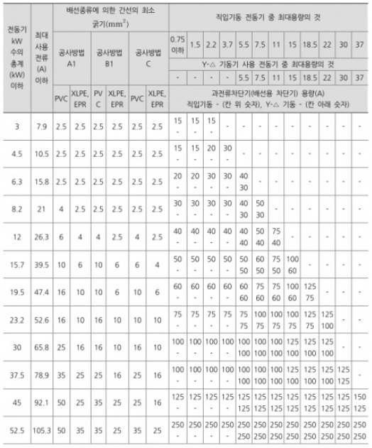
[비고 1] 최소 전선 굵기는 1회선에 대한 것이며, 2회선 이상일 경우는 부록 500-2의 복수회로 보정계수를 적용하여야 한다.
[비고 2] 공사방법 A1은 벽 내의 전선관에 공사한 절연전선 또는 단심케이블, B1은 벽면의 전선관에 공사한 절연전선 또는 단심케이블, 공사방법 C는 벽면에 공사한 단심 또는 다심케이블을 시설하는 경우의 전선 굵기를 표시하였다.
[비고 3] “전동기 중 최대의 것”에는 동시 기동하는 경우를 포함한다.
[비고 4] 배선용차단기의 용량은 해당 조항에 규정되어 있는 범위에서 실용상 거의 최대값을 표시한다.
[비고 5] 배선용차단기의 선정은 최대용량의 정격전류의 3배에 다른 전동기의 정격전류의 합계를 가산한 값 이하를 표시한다.
[비고 6] 배선용차단기를 배·분전반, 제어반 등의 내부에 시설하는 경우는 그 반 내의 온도상승에 주의한다.
[계산과정] (표1과 표2를 참고하여 계산과정을 상세히 기술해야 합니다. 문제에서 주어진 정보와 표를 바탕으로 전동기의 규약전류를 합산하고, 공사방법 A1, PVC 절연전선을 고려하여 적절한 간선 굵기를 [표2]에서 찾아야 합니다.)
정답
[계산과정] (표1을 참고하여 각 전동기와 전열기의 규약 전류를 구하고, 이를 합산합니다. [비고5]에 따라 최대용량의 정격전류의 3배에 다른 전동기의 정격전류 합계를 더한 값 이하의 차단기 용량을 선택해야 합니다.)
정답
[계산과정] \[ 전동기 출력 합계 [kW] = 1.5 + (3.7 × 2) + 15 = 23.9 [kW] \]
\[ 총 부하전류 [A] = 4.21 + (9.16 × 2) + 34.21 + \frac{3000}{\sqrt{3} \times 380} = 61.298 [A] \]
전동기 총계, 최대 사용전류, 공사 방법(A1), 전선 종류(PVC)를 고려
→ 간선의 굵기 25[mm²] 선정
정답 25[mm²]
[계산과정] 전동기 총계 30[kW] 행과 기동기(15[kW], Y-△ 기동 전동기)
열이 교차하는 과전류 차단기의 용량은 100[A]이다.
정답 100[A]
| 점수 | 세부기준 |
|---|---|
| 5점 | 문항 (1), (2)의 계산과정 및 정답이 모두 맞은 경우 |
| 3점 | 문항 (1)의 계산과정과 정답이 모두 맞은 경우 3점 획득 |
| 2점 | 문항 (2)만 맞은 경우 2점 획득 |
접근 POINT
주어진 조건을 적용하여 표를 해석하여 푸는 문제로 모든 조건을 동시에 만족시키는 지점은 표의 교차점이다.
해설
[표2] 해석을 위해 첫 두 항목, 전동기 출력 총계[kW]와 최대 사용전류[A]를 구한다. 유도전동기 전류는 규약전류표를 활용하고, 전열기는 별도로 주어지지 않았으므로 \(I = \frac{P}{\sqrt{3}V}\) 를 적용한다.
3상 유도전동기의 기동법은 크게 전전압 기동(직입 기동)과 감전압 기동(Y-△ 기동, 리액터 기동, 기동보상기법)으로 나뉘는데, 5[kW] ’기동기 사용 전동기’를 표에서 ’Y-△ 기동’으로 해석해야 함에 주의한다. 별도의 역률 조건이 없으므로, 역률은 1로 간주하고 풀이한다.
관련 이론
3상 농형 유도전동기의 기동법
① 전 전압 기동(직입 기동): 정격출력 5[kW] 이하의 소형 전동기에 정격전압을 직접 인가하는 방법이다.
② Y-△ 기동법: 고정자의 권선을 기동시는 Y결선하여 기동하고, 기동 후 운전 시에는 △결선으로 변경하는 기동법이다. 출력 5~15[kW] 정도의 중용량 전동기에 주로 사용된다.
③ 리액터 기동법: 전동기의 1차 측에 직렬로 리액터를 접속하여, 기동 시 전압강하에 의해 기동전류를 제한하는 방법이다.
④ 기동 보상기법: 기동 시 1차 측에 단권변압기를 접속하고 기동전압을 감소하므로 기동전류를 제한하는 기동법으로 20[kW] 이상 대용량 전동기에 사용된다.
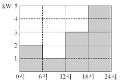
[계산과정]
정답
[계산과정]
정답
[계산과정]
정답
해설) 복합 계산형 / 난이도 中
[계산과정]
\[ W = 2 \times 6 + 1 \times 6 + 3 \times 6 + 5 \times 6 = 66 \text{ [kWh]} \]
정답 66 [kWh]
[계산과정]
\[ P_c = \left[ \left( \frac{2}{5} \right)^2 \times 0.13 + \left( \frac{1}{5} \right)^2 \times 0.13 + \left( \frac{3}{5} \right)^2 \times 0.13 + \left( \frac{5}{5} \right)^2 \times 0.13 \right] \times 6 = 1.22 \text{ [kWh]} \]
\[ P_l = 0.1 \times 24 = 2.4 \text{ [kWh]} \]
\[ \therefore P\_{L} = P_l + P_c = 2.4 + 1.22 = 3.62 \text{ [kWh]} \]
정답 3.62 [kWh]
[계산과정]
$ 효율 = % = = 94.8 % $
정답 94.8 [%]
부분점수
| 점수 | 세부기준 |
|---|---|
| 5점 | (1), (2), (3)번이 모두 맞은 경우 5점 획득 |
| 1점 | (1)번만 맞은 경우 1점 획득 |
| 4점 | (2), (3)번이 맞은 경우 한 문항당 2점 획득 |
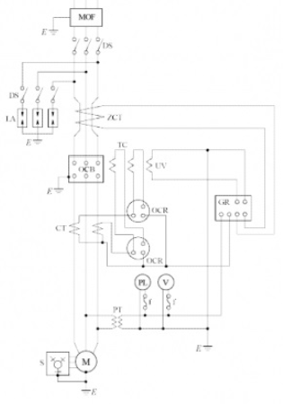
| 번호 | 약호 | 명칭 | 역할 |
|---|---|---|---|
| ① | MOF | ||
| ② | LA | ||
| ③ | ZCT | ||
| ④ | OCB | ||
| ⑤ | OCR | ||
| ⑥ | GR |
정답
정답
| 번호 | 약호 | 명칭 | 역할 |
|---|---|---|---|
| ① | MOF | 전력 수급용 계기용 변성기 | 고전압·대전류를 변압, 변류하여 전력량계에 공급한다. |
| ② | LA | 피뢰기 | 이상 전압이 내습하면 이를 대지로 방전하고, 속류를 차단한다. |
| ③ | ZCT | 영상 변류기 | 지락 사고 시 영상 전류를 검출한다. |
| ④ | OCB | 유입 차단기 | 단락 및 과부하, 지락 사고 등 사고 전류 차단 및 부하 전류를 개폐하기 위한 장치 |
| ⑤ | OCR | 과전류 계전기 | 정정값 이상의 전류가 흐르면 동작되는 계전기 |
| ⑥ | GR | 지락 계전기 | 지락 사고 발생시 동작하는 계전기 |
LA용 DS
직렬 리액터
부분점수
| 점수 | 세부기준 |
|---|---|
| 10점 | (1), (2), (3)번이 모두 맞은 경우 10점 획득 |
| 8점 | (1)번 표가 모두 맞은 경우 8점 획득, 오기입 1개당 1점씩 감점 |
| 2점 | (2), (3)번은 한 문제를 맞힐 때마다 1점씩 획득 |
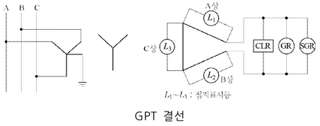
\[ (1) A상 고장 시(완전 지락 시), 2차 접지표시등 L_1, L_2, L_3의 점멸과 밝기를 비교하여 쓰시오. \]
정답
정답
정답
\[ (2) 평상 시 건전상의 대지전위는 \frac{110}{\sqrt{3}}[V]이나, 1선 지락 사고시에는 전위가 \sqrt{3}배로 증가하여 110[V]가 된다. \]
| 점수 | 세부기준 |
|---|---|
| 5점 | (1), (2), (3)번이 모두 정답인 경우 |
| 1~0점 | (1) 문항의 L₁, L₂, L₃의 모두 정답인 경우에만 1점 획득 |
| 2~0점 | (2) 문항이 정답인 경우 2점 획득 |
| 2~0점 | (3) 소문항 2개 중 각 1개당 부분 점수 1점 획득 |
비접지 선로의 접지저항을 검출하기 위한 GPT(접지형 계기용 변압기)의 구조와 동작 원리 및 명칭을 묻는 문제로 단순한 암기를 통해 학습해야 한다.
GPT(Ground Potential Transformer)는 접지형 계기용 변압기로, 비접지 계통에서 지락 사고 시 영상 전압(\(V_0\))을 검출하고, OVGR(Over Voltage Ground Relay)를 동작시키는 역할을 한다.
2차 측 권선들은 Open-△형으로 결선되고 한류저항(CLR, Current Limiting Resistor)이 붙어있는 형태를 가지고 있다.
CLR: Current Limiting Resister (한류저항기)
GR: Ground Relay (지락 계전기)
SGR: Selective Ground Relay (선택 지락 계전기)
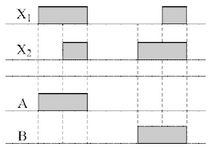
정답
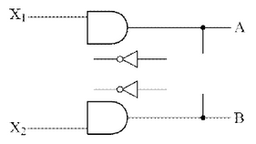
정답
논리식 : $A = X_1, B = X_2 $
| \[ | X_1 | X_2 | A | B | \] | |||||
|---|---|---|---|---|---|
| 0 | 0 | 0 | 0 | ||
| 0 | 1 | 0 | 1 | ||
| 1 | 0 | 1 | 0 |
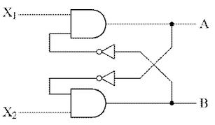
논리식:
\[ A = X_1 \cdot \overline{B}, B = X_2 \cdot \overline{A} \]
진리표:
| \[ | X_1 | X_2 | A | B | \] | |||||
|---|---|---|---|---|---|
| 0 | 0 | 0 | 0 | ||
| 0 | 1 | 0 | 1 | ||
| 1 | 0 | 1 | 0 |
| 점수 | 세부기준 |
|---|---|
| 6점 | (1), (2)번이 모두 맞는 경우 6점 획득 |
| 3점 | (1), (2)번 중 하나만 맞는 경우 3점 획득 |
정답
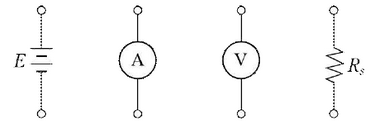
\[ **(2) 저항 R_s에 대한 식을 쓰시오.** \]
정답
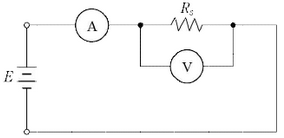
| 점수 | 세부기준 |
|---|---|
| 6점 | (1), (2)번이 모두 맞은 경우 6점 획득 |
| 4점 | (1)번이 맞은 경우 4점 획득 |
| 2점 | (2)번이 맞은 경우 2점 획득 |
전압 전류계법은 저항에 전류를 흘리면 전압강하가 생기는 것을 이용하여 저항값을 측정하는 방법이다.
| 방의 크기[mm²] | 표준적인 설치 수 |
|---|---|
| 5 미만 | ① |
| 5~10 미만 | ② |
| 10~15 미만 | ③ |
| 15~20 미만 | ④ |
| 부엌 | ⑤ |
[비고 1] 콘센트 구수에 관계 없이 1개로 본다.
[비고 2] 콘센트 2구 이상 콘센트를 설치하는 것이 바람직하다.
[비고 3] 대형 전기 기계 기구 전용 콘센트 및 환풍기, 전기 시계 등을 벽에 붙이는 전용 콘센트는 위 표에 포함되어 있지 않다.
[비고 4] 다용도실이나 세면장에는 방수형 콘센트를 시설하는 것이 바람직하다.
정답
①
②
③
④
⑤
정답
① 1, ② 2, ③ 3, ④ 3, ⑤ 2
부분점수
| 점수 | 세부기준 |
|---|---|
| 5점 | 1문항을 맞힐 때마다 1점씩 획득 |
해설
내선규정 3315-6 주택의 콘센트 수
| 방의 크기[mm²] | 표준적인 설치 수 | 바람직한 설치 수 |
|---|---|---|
| 5 미만 | 1 | 2 |
| 5 ~ 10 미만 | 2 | 3 |
| 10 ~ 15 미만 | 3 | 4 |
| 15 ~ 20 미만 | 3 | 5 |
| 부엌 | 2 | 4 |
[비고 1] 콘센트 구수(數)에 관계없이 1개로 본다.
[비고 2] 콘센트 2구 이상 콘센트를 설치하는 것이 바람직하다.
[비고 3] 대형 전기 기계 기구의 전용 콘센트 및 환풍기, 전기 시계 등을 벽에 붙이는 전용 콘센트는 위 표에 포함되어 있지 않다.
[비고 4] 다용도실이나 세면장에는 방수형 콘센트를 시설하는 것이 바람직하다.